Semester Design System
A complete written reference to Semester — the student action platform — for analysis: brand, voice, tokens, components, and every product surface. Derived from the github.com/harrisonjrubin7-cmyk/semester codebase and the brand brief.
Contents
- 1. Product, sources, voice, visual foundations, iconography (design guide)
- 2. Trust & status vocabulary
- 3. Design tokens (full values)
- 4. Component library (49 components with props)
- 5. Product surfaces with screenshots: Student app, Staff workspaces, Institution console, Mobile
- 6. Accessibility contract
- 7. Guidelines deep dives, patterns, templates
1. Design guide
Semester is the native Student Operating System for the complete educational journey — one governed, accessible platform for a student's academic, personal, campus, financial, career and lifelong life, plus the institutional workspaces (faculty, advisor, registrar, finance, IT/security) that serve them. Surfaces include Student Today, Calendar, Tasks, Courses, Study, Write, Degree, Registration, Grades, Campus, Dining, Housing, Family, Career, Billing, Support, the AI Assistant, and the Institution Console.
The system is calm, scholarly and source-aware: near-black chrome, warm off-white content, restrained Semester blue for action and focus, and a controlled vocabulary that keeps official, connected, personal and AI-generated information visibly distinct.
Sources
- Codebase (ground truth): https://github.com/harrisonjrubin7-cmyk/semester (branch
main). Key files read:DESIGN-SYSTEM-GUIDE.md,docs/COLOR-AND-DARK-MODE-SPEC.md,app/src/styles/{tokens,typefaces,industry,unity}.css,app/src/lib/{look,status,source}.ts,app/src/components/{Brand,Icons,icons.data,mark.data,SourceBadge,StatusNotice,StartToday}.tsx,app/src/components/unity/,app/src/components/console/. Also read:docs/BRAND-PLATFORM.md(voice, naming, Source Line),enrollment/StudentRegistration.tsx,gradebook/StudentGrades.tsx,AdvisorMeeting.tsx. Explore the repo further — especiallydocs/design/,company-site/andapp/src/components/— to build closer to the real product. - Uploads:
uploads/download-1.png(lit silver logo mark on Ink),uploads/Semester build Architecture.pdf,uploads/audit [...].pdf/.md(repo audit). - Brief: the user's written design direction (source-status hues, Semester blue, warm off-white content). Where it diverges from the code it is noted below.
Reconciling brief and code
The app's own rule is "one colour for attention, the rest in words and glyphs", with a sterling/brass metal accent. The brief asks for a Semester blue action colour and distinct source hues. This system keeps the code's grounds, type, radii, motion, glyph+word status vocabulary and contrast floors, and adopts the brief's palette using hues pulled from the code's own measured ramps (Industry blue → Semester blue; Jade/Moss/Indigo/Old gold → teal/green/violet/amber). Every chip still carries a glyph and a word; colour is never the only carrier.
CONTENT FUNDAMENTALS
From docs/BRAND-PLATFORM.md (draft) and in-app copy. Personality: a good registrar's assistant crossed with a precision instrument — exact, calm, candid, warm sparingly, self-possessed. Public descriptor: "the student action platform" ("Student OS" is internal only — it implies replacement). Assistant name: Ask Semester — no human name, face or persona; always labelled AI-assisted.
The status sentence (the unit of Semester voice): what is true → what that means for you → what you can do. "Your Canvas calendar hasn't updated since Tuesday. Deadlines below may have moved. Reconnect it, or check the course page."
Prefer / avoid: "helps you organise" not "revolutionises"; "alongside your school's systems" not "replaces / all-in-one"; "AI-assisted, source-linked" not "AI-powered / intelligent / magic"; name the control, never "secure / private / compliant / certified"; "planned / in private beta / pilot" not "launching soon"; "can / is designed to" not "guarantees / always / 100%"; "student" not "user / learner". Destinations are always Today, My Path, Search, Plan, Me.
Consequence copy from the product: "Confirming puts you on the waitlist, number 3 in line. You are not enrolled until a seat comes to you." · "You leave CHEM 101 and a W is recorded on your transcript. It cannot be undone here." · "Worked out by Semester from released grades only; your instructor's final grade is the one that counts." · "Only what you tick here can be shared. Nothing else — not your study history, grades, notes or anything else — ever is."
- Voice: plain, precise, quietly warm. Speaks to the student as "you"; the product never says "we" about itself in-UI ("Semester has not checked it with your institution"). First person only in the assistant's own answer ("I'd place them…").
- Casing: Sentence case everywhere — buttons, titles, chips ("Needs confirmation", "Sync trouble"). UPPERCASE only for tracked kickers/eyebrows and the wordmark.
- Say what, why, who decides. Every state explains itself: "You are offline. You can keep working — 2 changes will sync when you are back." Errors say what is safe: "Your draft is safe on this device."
- Name the source. "Institution verified", "Imported", "Student entered", "Estimated", "AI-assisted", "Needs review". Never "verified" unless it was.
- Consequences before confirm: What happens / Exactly what / What stays the same / Taking it back. "This can be reversed on request: ask the Registrar before Oct 20."
- Respectful, not celebratory: no streaks, ranks, exclamation marks or confetti. "Registration submitted. Next: review your fall schedule."
- Never overclaim: don't call Semester the official gradebook, registrar or payment system; label demo data "Sample".
- Numbers: tabular figures; dates as "Thu 9 Oct · 23:59"; middle dot
·separates metadata. - Emoji: never. Unicode glyphs are used as status marks: ◆ official, ○ yours, ✦ AI, ⇄ connected/conflict, ? review, ! attention, ✓ done, ⊘ offline, … working, ◌ sample.
VISUAL FOUNDATIONS
- Colour: Ink (#090a0e family) for all chrome — rail, tab bar, console environment bar. Parchment (#f4f1ea / panel #fbf9f4) for content. Dark mode = Ink content via
[data-theme="dark"](tonal elevation: surfaces lighten as they rise). Semester blue 700#416180is the one action/fill colour on light, 400#94bce3on dark. Brass is an editorial accent only. Source/status hues are desaturated stones, used as ink + hairline + 8% wash — never as large fills. - Type: Barlow (body 16/1.55, controls 14), Barlow Condensed 600 (headings, buttons, labels, -0.015em), Cinzel (editorial display, 42–56px, rare), system mono (IDs, timestamps). Kickers: 10.5px, 0.08em tracked caps, secondary ink. Body measure ≈ 66ch.
- Spacing: density-aware 2px steps
--sp-1…7(2–16px) inside components; 8px grid--space-*for layout. Page padding 18 / 20 / 30 by breakpoint. 44px default targets, 24px floor in crowded composites. - Backgrounds: flat grounds only. No photography backgrounds, no gradients except the brushed sterling text gradient on the wordmark/chrome text. No patterns, textures or illustrations.
- Borders & cards: hierarchy by hairline first (9 / 16 / 34% ink), surface step second, shadow third. Cards: 1px border, 6px radius, 16px padding, no shadow, never nested. A card groups a decision, not a paragraph.
- Corners: "Drawn" 3 / 6 / 10px (control / card / sheet). Pills only for floating bars; chips are 3px.
- Shadows: light — ink-tinted
0 1px 2px/0 3px 10px/0 12px 32px; dark —--lift-1…3. Used for floating and modal layers only. - Transparency & blur: only on the tab bar and focus bar (14px blur), always with an opaque fallback under reduced transparency, increased contrast, Low stimulation and forced colours. Scrims are 50% Ink.
- Motion: 130ms hover/press, 180ms state change, 240ms panel, 280ms sheet; ease
cubic-bezier(.22,1,.36,1). Sheets rise 8px + fade. No bounce, parallax, shimmer, spinners or looping decoration. All zeroed byprefers-reduced-motionanddata-calm. - Hover: a blue 8% wash on buttons/rows, hairline darkens on inputs, text steps from secondary → primary. Press: 14% wash or one ramp step darker on primary. No scale/shrink.
- Focus: 2px blue-600 outline, 2px offset; selected list rows use a 3px leading edge + weight, never colour alone.
- Imagery: the only brand image is the lit silver mark on Ink (cool, metallic, no grain). No stock photography or AI imagery in-product.
- Layout: fixed dark side rail (248px) on desktop, labelled bottom tab bar on mobile, persistent system context bar with ⌘K search on top. Operational content ≤1180px; one H1 per screen.
ICONOGRAPHY
- The app ships its own inline icon set (
app/src/components/icons.data.ts): Lucide-like, 24×24 grid, 1.5px stroke, round caps/joins, no fills (one exception: the favourite star fills when on). 108 glyphs, copied programmatically toassets/icons/*.svgand tocomponents/icons/iconShapes.jsfor the<Icon>component. - Default size 19px in rows/rails, 21px in the tab bar, 15–17px inside buttons. Always
currentColor. assets/icons-sprite.svgis the app's public sprite; logo files:assets/logo-mark.svg(flat, currentColor, generated frommark.data.ts),assets/logo-mark-tile.svg/-maskable.svg/-512.png(lit silver app icons),assets/logo-mark-silver.png(uploaded render).- Unicode glyphs carry status (see Content). Emoji are never used. Icon-only controls always have an accessible name. If a glyph you need is missing, use the matching Lucide icon at stroke-width 1.5 (CDN) and flag it.
Components
All in components/<group>/, each Name.jsx + Name.d.ts + Name.prompt.md, styled by tokens/components.css. Namespace: window.SemesterDesignSystem_e9f3ba.
- core: Button, IconButton, Icon, Wordmark (+ Mark), SectionLabel, Avatar
- forms: TextField, Select, Segmented, Choice, Switch, Combobox, DateField, VisibilityPicker
- trust: SourceBadge, SourceLine, StatusChip, ProvenanceChips, AIResponse (shared
vocabulary.js) - feedback: EmptyState, LoadingState, ErrorState, SuccessState, ProgressState, StepStatus, PermissionNotice, OfflineStrip, SaveState, Notice
- surfaces: ObjectCard, ContextBar, NextSteps, ActionPreview, Dialog, ScreenGuide, OpenIn, QuickActions
- overlays: Sheet (+ SourceDetails), UndoToast, FocusBar
- navigation: SideRail, TabBar, SystemContextBar, CommandPalette
- data: DataTable, Fields, DecisionTrail, MetricTile, ProvenanceChart
Intentional additions (no single source file): AIResponse (combines the app's AI disclosure rules into one frame), Switch/Choice (the app uses native inputs in .visibility-choice), SideRail (generalises desk/Sidebar.tsx), CommandPalette (from unity/Combobox styling + the brief's ⌘K), DecisionTrail (from unity/DecisionTrail + console approvals), SourceLine (the brand platform's proposed signature device, §2.6).
UI kits
ui_kits/student/— Student app (desktop): Today, Course, Grades, Ask Semester, Degree, Advising, Registration, Career, Campus, Billing, Family.ui_kits/staff/— Faculty gradebook, Advisor, Registrar desk, Finance student accounts.ui_kits/console/— Institution console: Overview, Approvals, Integrations, Audit log.ui_kits/mobile/— Phone-width app on Parchment and Ink with the five-destination tab bar.
Templates
templates/student-screen/StudentScreen.dc.html— rail + context bar + page head + main/aside with ObjectCard and NextSteps.templates/console-screen/ConsoleScreen.dc.html— environment bar + rail + DataTable + DecisionTrail.
Index
styles.css— entry;@imports only.tokens/—fonts.css,colors.css,typography.css,spacing.css,effects.css,base.css,components.css.fonts/— Barlow 400/500/700, Barlow Condensed 400/600, Cinzel (OFL).assets/— logos, app icons,icons/(108 SVGs), sprite.guidelines/— specimen cards (Colors, Type, Spacing, Brand, Patterns) and deep-dive docs:01-provenance-and-trust.md— the ladder, made vs AI, where cues go02-ai-governance.md— Ask Semester, AIResponse anatomy, course policy03-consequential-actions.md— undo vs preview vs two-person duty04-consent-and-family.md— default private, one decision at a time, access history05-institutional-surfaces.md— context bars, tables, authority scope06-accessibility.md— contrast, structure, reader settings, brand-exempt zones07-layout-and-responsive.md— tiers, shell, page grid, destinations08-content-templates.md— status sentence, empty/error/success, incidents, onboardingcomponents/,ui_kits/— see above.SKILL.md,github.md,thumbnail.html.
Caveats: Atkinson Hyperlegible (the app's legibility body option) and Latin-Extended font subsets were not copied. The production app offers 13 grounds × 11 accents; only Ink and Parchment ship here.
2. Trust & status vocabulary
Every fact shown in Semester carries a source label; every state carries a glyph, a word and a tone. Colour is never the only carrier. Official, connected, personal and AI-generated information must always be visibly distinguishable.
Source vocabulary
| Key | Label | Glyph | Tone | Meaning shown to the reader |
|---|---|---|---|---|
official | Institution verified | ◆ | official · solid | Confirmed by your institution’s own system. |
connected | Connected | ⇄ | connected · outline | Synced from a connected account or feed. Semester has not checked it with your institution. |
imported | Imported | ↓ | connected · outline | Copied in from a file or feed. Semester has not checked it with your institution. |
personal | Student entered | ○ | personal · outline | You typed this in. Semester has not checked it with your institution. |
ai | AI-assisted | ✦ | ai · outline | Written with Semester’s assistant. It is not an official answer — check anything you act on. |
estimated | Estimated | ≈ | pending · outline | Worked out by Semester from what it knows. Not an official figure. |
review | Needs review | ? | pending · outline | Something about this looks wrong or out of date. Check it before relying on it. |
stale | Unavailable or stale | ! | danger · outline | Semester cannot confirm that this information is current. |
external | External | ↗ | neutral · outline | From a source outside your institution and outside Semester, such as a web page. |
sample | Sample | ◌ | neutral · dashed | Illustrative data. Not live. |
Status vocabulary
| Key | Label | Glyph | Tone |
|---|---|---|---|
saving | Saving… | … | neutral |
saved | Saved | ✓ | success |
syncing | Syncing | ↻ | neutral |
synced | Synced | ✓ | success |
offline | Offline | ⊘ | pending |
queued | Queued | ⋯ | neutral |
conflict | Conflict needs review | ⇄ | danger |
sync-error | Sync trouble | ! | danger |
needs-confirmation | Needs confirmation | ? | pending |
action-required | Action required | ! | pending |
pending | Pending approval | ◷ | pending |
approved | Approved | ✓ | success |
rejected | Rejected | ✕ | danger |
verified | Verified | ✓ | success |
hold | Hold on account | ! | danger |
faculty-approved | Faculty-approved | ◆ | success |
course-provided | Course-provided | ◇ | official |
updated-today | Updated today | ↻ | neutral |
draft | Draft | ○ | neutral |
live | Live | ● | success |
beta | Preview | ◌ | neutral |
3. Design tokens
All tokens are CSS custom properties on :root, imported through styles.css. Light (Parchment) content is the default; [data-theme="dark"] switches content to Ink. Chrome (rail, tab bar, console bars) is always Ink.
Colour tokens/colors.css
| Token | Value |
|---|
Dark theme overrides [data-theme="dark"]
| Token | Value |
|---|---|
--surface-sunken | var(--ink-void) |
--surface-canvas | var(--ink-bg) |
--surface-base | var(--ink-panel) |
--surface-quiet | #161820 |
--surface-raised | var(--ink-hero) |
--surface-overlay | var(--ink-raise) |
--text-primary | var(--ink-fg) |
--text-secondary | rgba(236,238,242,.64) |
--text-tertiary | rgba(236,238,242,.42) |
--text-disabled | rgba(236,238,242,.42) |
--text-on-action | #08090c |
--text-link | var(--blue-300) |
--border-subtle | rgba(236,238,242,.08) |
--border-default | rgba(236,238,242,.14) |
--border-strong | rgba(236,238,242,.30) |
--action-primary | var(--blue-400) |
--action-primary-hover | var(--blue-300) |
--action-primary-press | var(--blue-500) |
--action-secondary | rgba(148,188,227,.10) |
--action-secondary-hover | rgba(148,188,227,.18) |
--focus-color | var(--blue-400) |
--accent-editorial | var(--brass) |
--source-official | var(--official-tint) |
--source-official-line | rgba(181,217,253,.40) |
--source-official-wash | rgba(181,217,253,.08) |
--source-connected | var(--connected-tint) |
--source-connected-line | rgba(159,203,205,.40) |
--source-connected-wash | rgba(159,203,205,.08) |
--source-personal | var(--personal-tint) |
--source-personal-line | rgba(185,185,189,.34) |
--source-personal-wash | rgba(185,185,189,.06) |
--source-ai | var(--ai-tint) |
--source-ai-line | rgba(188,178,223,.42) |
--source-ai-wash | rgba(188,178,223,.09) |
--status-pending | var(--pending-tint) |
--status-pending-line | rgba(226,194,122,.45) |
--status-pending-wash | rgba(226,194,122,.09) |
--status-danger | var(--risk-tint) |
--status-danger-line | rgba(240,144,122,.45) |
--status-danger-wash | rgba(240,144,122,.09) |
--status-success | var(--success-tint) |
--status-success-line | rgba(169,201,163,.42) |
--status-success-wash | rgba(169,201,163,.08) |
Typography tokens/typography.css
| Token | Value |
|---|---|
--font-display | 'Cinzel','Barlow Condensed',Georgia,serif |
--font-heading | 'Barlow Condensed',system-ui,sans-serif |
--font-heading-weight | 600 |
--font-body | 'Barlow',system-ui,sans-serif |
--font-mono | ui-monospace,'SF Mono',Menlo,Consolas,monospace |
--font-editorial | var(--font-display) |
--font-product | var(--font-body) |
--type-3xs | calc(9px * var(--text-scale,1)) |
--type-2xs | calc(10px * var(--text-scale,1)) |
--type-2xs-plus | calc(10.5px * var(--text-scale,1)) |
--type-xs | calc(11px * var(--text-scale,1)) |
--type-xs-plus | calc(11.5px * var(--text-scale,1)) |
--type-sm | calc(12px * var(--text-scale,1)) |
--type-sm-plus | calc(12.5px * var(--text-scale,1)) |
--type-control | calc(14px * var(--text-scale,1)) |
--type-base | calc(16px * var(--text-scale,1)) |
--type-base-plus | calc(16.5px * var(--text-scale,1)) |
--type-md | calc(17px * var(--text-scale,1)) |
--type-lg | calc(18px * var(--text-scale,1)) |
--type-display-xs | calc(19px * var(--text-scale,1)) |
--type-display-sm | calc(20px * var(--text-scale,1)) |
--type-display | calc(22px * var(--text-scale,1)) |
--type-display-lg | calc(24px * var(--text-scale,1)) |
--type-xl | calc(26px * var(--text-scale,1)) |
--type-2xl | calc(28px * var(--text-scale,1)) |
--type-3xl | calc(32px * var(--text-scale,1)) |
--type-4xl | calc(42px * var(--text-scale,1)) |
--type-5xl | calc(56px * var(--text-scale,1)) |
--leading-none | 1 |
--leading-display-xl | 1.08 |
--leading-display-lg | 1.1 |
--leading-display | 1.15 |
--leading-display-sm | 1.2 |
--leading-display-xs | 1.25 |
--leading-tight | 1.3 |
--leading-tight-plus | 1.35 |
--leading-normal | 1.45 |
--leading-relaxed | 1.5 |
--leading-relaxed-plus | 1.55 |
--leading-loose | 1.6 |
--tracking-heading | -0.015em |
--tracking-kicker | 0.08em |
--tracking-caps | 0.1em |
--tracking-wordmark | 0.22em |
--type-role-editorial | var(--type-4xl) |
--type-role-display | var(--type-xl) |
--type-role-page | var(--type-display-lg) |
--type-role-section | var(--type-display-sm) |
--type-role-card-title | var(--type-lg) |
--type-role-body | var(--type-base) |
--type-role-compact | var(--type-sm) |
--type-role-label | var(--type-xs) |
--type-role-kicker | var(--type-2xs-plus) |
--type-role-numeric | var(--type-display) |
--type-role-control | var(--type-control) |
--type-role-caption | var(--type-xs) |
--layout-reading | 66ch |
Spacing, layout & targets tokens/spacing.css
| Token | Value |
|---|---|
--density | 1 comfortable, .86 snug, .74 tight. */
:root{
--sp-1:calc(2px * var(--density,1)) |
--sp-2 | calc(4px * var(--density,1)) |
--sp-3 | calc(6px * var(--density,1)) |
--sp-4 | calc(8px * var(--density,1)) |
--sp-5 | calc(10px * var(--density,1)) |
--sp-6 | calc(12px * var(--density,1)) |
--sp-7 | calc(16px * var(--density,1)) |
--space-1 | 8px |
--space-2 | 16px |
--space-3 | 24px |
--space-4 | 32px |
--space-5 | 40px |
--space-6 | 48px |
--space-8 | 64px |
--space-10 | 80px |
--space-12 | 96px |
--page-pad | 18px |
--chrome-pad | 18px |
--rail-w | 248px |
--rail-w-compact | 72px |
--layout-measure | 100% |
--layout-operational | 1180px |
--layout-gutter | var(--page-pad) |
--target-min | 24px |
--target-compact | 32px |
--target-icon | 40px |
--target-primary | 44px |
--control-height-compact | var(--target-compact) |
--control-height-standard | var(--target-primary) |
--focus-ring-width | 2px |
--focus-ring-offset | 2px |
Shape, elevation, motion & layers tokens/effects.css
| Token | Value |
|---|---|
--r-sm | 3px |
--r-md | 6px |
--r-lg | 10px |
--shape-control | var(--r-sm) |
--shape-card | var(--r-md) |
--shape-surface | var(--r-lg) |
--shape-sheet | var(--r-lg) |
--shape-pill | 999px |
--lift-1 | 0 1px 2px rgba(0,0,0,.4) |
--lift-2 | 0 1px 2px rgba(0,0,0,.45),0 6px 18px rgba(0,0,0,.35) |
--lift-3 | 0 1px 3px rgba(0,0,0,.5),0 12px 36px rgba(0,0,0,.5) |
--shadow-sm | 0 1px 2px rgba(43,43,45,.14) |
--shadow-md | 0 3px 10px rgba(43,43,45,.16) |
--shadow-lg | 0 12px 32px rgba(43,43,45,.22) |
--elevation-none | none |
--elevation-raised | var(--shadow-sm) |
--elevation-floating | var(--shadow-md) |
--elevation-modal | var(--shadow-lg) |
--ease | cubic-bezier(.22,1,.36,1) |
--ease-standard | var(--ease) |
--ease-emphasized | cubic-bezier(.2,.8,.2,1) |
--duration-instant | 0ms |
--duration-fast | 130ms |
--duration-standard | 180ms |
--duration-slow | 240ms |
--duration-sheet | 280ms |
--fast | 130ms var(--ease) |
--motion-save | var(--duration-standard) var(--ease-standard) |
--motion-insert | var(--duration-standard) var(--ease-standard) |
--motion-panel | var(--duration-slow) var(--ease-emphasized) |
--motion-sheet | var(--duration-sheet) var(--ease-emphasized) |
--motion-progress | var(--duration-standard) linear |
--layer-base | 0 |
--layer-raised | 1 |
--layer-sticky | 20 |
--layer-chrome | 21 |
--layer-overlay | 80 |
--layer-menu | 90 |
--layer-skip | 100 |
--layer-curtain | 1500 |
--blur-chrome | 14px |
Fonts
| Family | Weights | Role |
|---|---|---|
| Cinzel | 400–600 (variable) | Editorial display only — large, few words; never status or warnings |
| Barlow Condensed | 400, 600 | Headings, wordmark, buttons, labels, dense cards |
| Barlow | 400, 500, 700 | Body, forms, data, operational text |
| System mono | — | IDs, timestamps, source metadata |
4. Component library
49 React components exported on window.SemesterDesignSystem_e9f3ba, styled by tokens/components.css.
core
| Component | What & when | Props |
|---|---|---|
| Avatar | Initials in a tinted square that follows the corner setting; profile glyph when no name. No photos, never derived from an email address. <Avatar name="Maya Lindqvist" size={40} /> | name?: string; size?: number; |
| Button | Action button — one primary per decision region; 44px tall by default, condensed-caps-free label in Barlow Condensed 600. primary (Semester blue fill), secondary (hairline), ghost (text), danger (red ink, hairline — never a red fill). size="sm" = 32px for dense rows. <Button variant="primary" icon="check">Submit registration</Button> | variant?: "primary" | "secondary" | "ghost" | "danger"; size?: "md" | "sm"; icon?: string; iconAfter?: string; block?: boolean; loading?: boolean; disabled?: boolean; children?: React.ReactNode; onClick?: (e: any) => void; type?: "button" | "submit"; |
| Icon | Semester line glyph (Lucide-like, 24 grid, 1.5 stroke) from the app's own icon set — 108 names, see assets/icons/.label makes it a named image; otherwise decorative. Names: today, courses, calendar, study, degree, registrar, costs, family, career, campus, meals, housing, ask, sources, privacy, settings, search, bell…<Icon name="calendar" size={19} /> | name: string; size?: number; label?: string; strokeWidth?: number; style?: React.CSSProperties; className?: string; |
| IconButton | Icon-only control with a required accessible name (also its tooltip). 40px (md) / 32px (sm). Never ship an icon-only control without label.<IconButton icon="bell" label="Notifications" /> | icon: string; label: string; size?: "md" | "sm"; pressed?: boolean; onClick?: (e: any) => void; |
| SectionLabel | The small uppercase kicker that heads a section, with an optional right-aligned count. Tracked 0.08em caps at 10.5px, secondary ink. <SectionLabel aside="3">Begin today</SectionLabel> | children: React.ReactNode; aside?: React.ReactNode; as?: "h2" | "h3" | "h4"; style?: React.CSSProperties; |
| Wordmark | The Semester lockup — three-slab mark + SEMESTER in Barlow Condensed caps; also exports Mark.metal paints brushed sterling for dark chrome. <Mark size={24}/> alone for tiles/favicons.<Wordmark size={20} metal /> | size?: number; metal?: boolean; showWord?: boolean; style?: React.CSSProperties; |
forms
| Component | What & when | Props |
|---|---|---|
| Choice | Radio/checkbox row with a sentence explaining the consequence — used for visibility and sharing choices. 24px+ target, 44px row. Use for consent/sharing where the consequence must be read. <Choice name="vis" label="Only me" about="Nobody else can see this." checked /> | type?: "radio" | "checkbox"; label: string; about?: string; checked?: boolean; onChange?: (e: any) => void; name?: string; value?: string; disabled?: boolean; |
| Combobox | Text box with a filtered listbox beneath — course search, people, rooms. Selected row = 3px leading edge + weight. Escape closes; Enter picks. <Combobox label="Find a course" options={[{label:"BIO 330 · Genetics",detail:"4 cr · MW 10:00"}]} /> | label: string; hint?: string; options: { label: string; detail?: string }[]; value?: string; onChange?: (q: string) => void; onSelect?: (o: any) => void; placeholder?: string; defaultOpen?: boolean; |
| DateField | Native date/time input with the chosen date spoken back unambiguously. Always show said in "Thu 9 Oct 2026" form so locale order can’t mislead.<DateField label="Due" value="2026-10-09" said="Thu 9 Oct 2026" /> | label: string; hint?: string; value?: string; onChange?: (e: any) => void; withTime?: boolean; said?: string; |
| Segmented | 2–4 mutually exclusive view choices (e.g. Cards / Rows / Timeline). Selected = inverted ink. 32px tall; reserved for presentation choices, not navigation. <Segmented label="Feed" options={["Cards","Rows","Timeline"]} value="Cards" /> | options: (string | { value: string; label: string })[]; value: string; onChange?: (v: string) => void; label: string; |
| Select | Native select drawn in Semester's palette. Use native semantics; don't imitate a select with a menu. <Select label="Term" options={["Fall 2026","Spring 2027"]} /> | label: string; hint?: string; options: (string | { value: string; label: string })[]; value?: string; onChange?: (e: any) => void; id?: string; |
| Switch | On/off setting that speaks its state as a word beside the track. role="switch"; On/Off text is always visible. <Switch label="Share grades with Alex" checked /> | checked?: boolean; onChange?: (v: boolean) => void; label: string; disabled?: boolean; |
| TextField | Labelled input/textarea with associated hint and error — the label is always visible.error sets aria-invalid and a "!"-prefixed message. Placeholder is an example, never the label.<TextField label="Preferred name" hint="Shown to classmates and instructors." /> | label: string; hint?: string; error?: string; multiline?: boolean; id?: string; value?: string; placeholder?: string; onChange?: (e: any) => void; disabled?: boolean; |
| VisibilityPicker | "Who can see this?" — the one privacy pattern, with the same four answers in every module. Only offer audiences the module can actually honour. locked draws the statement alone. Presentation only — never grants access itself.<VisibilityPicker value="only-me" allowed={["only-me","course"]} /> | value?: "only-me" | "course" | "collaborators" | "portfolio"; onChange?: (v: string) => void; allowed?: string[]; locked?: boolean; origin?: "student-entered" | "institution-provided" | "connected-system"; onLearnMore?: () => void; |
trust
| Component | What & when | Props |
|---|---|---|
| AIResponse | A governed assistant answer — labelled AI-assisted with data scope, numbered sources, confidence, request cost and policy. Use .ai-cite spans for inline [n] citations. Consequential actions go in actions and must open a Dialog/ActionPreview before running.<AIResponse scope={["BIO 210 materials"]} sources={[{title:"Syllabus",kind:"official"}]} confidence="Moderate">…</AIResponse> | children: React.ReactNode; scope?: string[]; sources?: { title: string; kind?: string }[]; confidence?: string; cost?: string; policy?: string; actions?: React.ReactNode; model?: string; |
| ProvenanceChips | A fact's origin chip plus at most two cues and its age, spoken as one sentence. Origin always shows; only two cues render — the rest belong in Source & details. <ProvenanceChips origin="official" by="Registrar" cues={["action-required"]} age="Updated today" /> | origin: string; by?: string; cues?: string[]; age?: string; |
| SourceBadge | Where a fact came from, beside the fact — controlled vocabulary (glyph + word + tone). official navy (solid), connected teal, personal graphite, ai violet (always labelled), estimated/review amber, stale red, sample dashed. onReport adds "Report incorrect information".<SourceBadge source="official" by="Registrar" updated="Updated 2h ago" /> | source: "official" | "connected" | "imported" | "personal" | "ai" | "estimated" | "review" | "stale" | "external" | "sample"; updated?: string; by?: string; onReport?: () => void; |
| SourceLine | The Source Line — a thin brass/editorial rule from a statement to its source chip; Semester's signature device (docs/BRAND-PLATFORM.md §2.6). Never decorative: use only where a real source label exists. The chip carries the word; the line is reinforcement. <SourceLine source="official" by="Registrar" when="3 Oct"><h2>You need 26 more credits to graduate.</h2></SourceLine> | children: React.ReactNode; source?: string; by?: string; when?: string |
| StatusChip | One status chip — glyph + word + tone from the shared status table. Keys: saving, saved, syncing, synced, offline, queued, conflict, sync-error, needs-confirmation, action-required, pending, approved, rejected, verified, hold, faculty-approved, course-provided, updated-today, draft, live, beta. <StatusChip status="pending" /> | status: string; label?: string; |
feedback
| Component | What & when | Props |
|---|---|---|
| EmptyState | Explains why a list is empty and offers one relevant next action. Dashed hairline frame; never decorative illustration. <EmptyState title="No tasks due this week" body="Tasks you add or that courses publish appear here." action={<Button>Add a task</Button>} /> | title: string; body?: string; action?: React.ReactNode; |
| ErrorState | Plain-language failure with a required recovery action and an optional support reference. role="alert"; preserve the user's input, separate retryable failure from permission. <ErrorState title="Canvas didn’t answer" body="Your draft is safe on this device." reference="SYNC-4F2A" /> | title: string; body: string; recoverLabel?: string; onRecover?: () => void; secondaryLabel?: string; onSecondary?: () => void; reference?: string; |
| LoadingState | Still structural placeholders plus a spoken "Loading …" — no spinner or shimmer. Only when the final shape is known; otherwise say what is happening in words. <LoadingState what="your courses" /> | what?: string; bars?: number[]; |
| Notice | One-line service or context notice (role=status).<Notice head="Calendar">Sync is slow right now; times may be up to 10 minutes old.</Notice> | head?: string; children: React.ReactNode; |
| OfflineStrip | Offline strip that says what still works and that changes are queued.<OfflineStrip queued={2} /> | queued?: number; syncs?: boolean; |
| PermissionNotice | States what changed about access, why, and where it is controlled.<PermissionNotice changed="Your advisor can now see your degree plan" why="You shared it on Oct 2." controlLabel="Manage sharing" /> | changed: string; why: string; controlLabel?: string; onControl?: () => void; |
| ProgressState | A determinate wait (upload, import) with real <progress>, percentage in words, Cancel/Retry.failed swaps the bar for the reason + Retry.<ProgressState label="Importing transcript" done={64} total={100} note="Only your institution and you can see this file." /> | label: string; done?: number; total?: number; note?: string; failed?: string; onCancel?: () => void; onRetry?: () => void; |
| SaveState | The quiet "Saving… → Saved" line near the work, in a polite live region. offline/conflict/sync-error announce assertively. <SaveState status="saved" /> | status?: string; |
| StepStatus | A process in named steps — shows the AI or system working instead of faking certainty.<StepStatus steps={[{label:"Reading sources",state:"done"},{label:"Drafting",state:"working"}]} /> | steps: { label: string; state: "waiting" | "working" | "done" | "failed" }[]; label?: string; |
| SuccessState | Respectful acknowledgement that points at what is next — no confetti, streaks or ranks.<SuccessState title="Registration submitted" nextLabel="Review your fall schedule" /> | title: string; body?: string; nextLabel?: string; onNext?: () => void; |
surfaces
| Component | What & when | Props |
|---|---|---|
| ActionPreview | What is about to happen, said before it happens — What happens / Exactly what / What stays / Taking it back. Put inside Dialog for consequential, irreversible or financial actions. <ActionPreview subject="Drop CHEM 101" says="You leave the course and its waitlist." recovery={{kind:"request",how:"ask the Registrar before Oct 20."}} /> | subject?: string; says: React.ReactNode; exactly?: React.ReactNode; doesNotChange?: React.ReactNode; recovery: { kind: "undo" | "request" | "none"; how?: string }; subjectTo?: React.ReactNode; provenance?: React.ReactNode; |
| ContextBar | The object a screen is about, with its states and actions. Inside an existing panel it drops its own frame. <ContextBar kicker="BIO 210 · Assignment" title="Lab report 3" states={<StatusChip status="draft"/>} /> | kicker?: string; title: string; states?: React.ReactNode; actions?: React.ReactNode; |
| Dialog | Modal confirmation — focus lands on Cancel, Escape closes, names object + consequence + recovery.destructive uses red-ink button. inline renders without scrim (for docs).<Dialog title="Submit registration?" confirmLabel="Submit"><ActionPreview … /></Dialog> | open?: boolean; title: string; children?: React.ReactNode; confirmLabel?: string; cancelLabel?: string; onConfirm?: () => void; onCancel?: () => void; destructive?: boolean; inline?: boolean; |
| NextSteps | Ordered list of next safe actions, each with one line of why.<NextSteps steps={[{label:"Pay fall balance",why:"A hold blocks registration on Oct 14.",icon:"costs"}]} /> | steps: { label: string; why?: string; icon?: string; aside?: React.ReactNode; onClick?: () => void }[]; |
| ObjectCard | The universal decision card: eyebrow → title → provenance → why → metadata → one primary + one quiet secondary. A card groups a decision, not every paragraph. Never nest cards. <ObjectCard kind="Assignment" title="Lab report 3" provenance={{origin:"official",by:"BIO 210"}} explanation="Worth 12% of your grade." metadata="Due Thu 9 Oct · 23:59" primary={{label:"Open draft"}} secondary={{label:"View rubric"}} /> | kind?: string; statuses?: string[]; title: string; provenance?: { origin: string; by?: string; cues?: string[]; age?: string }; explanation?: string; metadata?: string; primary?: { label: string; onClick?: () => void }; secondary?: { label: string; onClick?: () => void }; tone?: "pending" | "danger"; level?: 2 | 3 | 4; children?: React.ReactNode; |
| OpenIn | "Open in" row — the way from one object to every place it matters (Plan, Study, Calendar). Words, never icons alone. <OpenIn about="BIO 210" targets={["Plan","Study","Calendar"]} /> | targets: string[]; about: string; onOpen?: (t: string) => void; |
| QuickActions | Row of 2–5 labelled starting actions for empty and onboarding states.<QuickActions actions={[{label:"Add a syllabus",icon:"import"}]} /> | actions: { label: string; icon?: string; onClick?: () => void }[]; |
| ScreenGuide | "About this screen" disclosure at the foot of every screen — what it is for, where its data comes from, who decides.<ScreenGuide items={[{q:"Where does this information come from?",a:"Your registrar’s degree audit, updated nightly."}]} /> | items: { q: string; a: string }[]; open?: boolean; |
overlays
| Component | What & when | Props |
|---|---|---|
| FocusBar | Floating pill during a focus session: time left, task, Pause, End. The only frosted overlay besides the tab bar; opaque under reduced transparency. <FocusBar task="Lab report 3 · results" remaining="24:10" /> | task: string; remaining?: string; onPause?: () => void; onEnd?: () => void; breakDue?: string; |
| Sheet | Bottom sheet on mobile, window on desktop; the home of "Source & details". Also exports SourceDetails.Rows: Origin, Freshness, Used in, Who can see this, Limitations, Report. <Sheet title="Source & details"><SourceDetails items={[{label:"Origin",value:"Official · Registrar"}]} /></Sheet> | title: string; children?: React.ReactNode; onClose?: () => void; inline?: boolean; actions?: React.ReactNode; |
| UndoToast | One-sentence confirmation with Undo for reversible work — instead of an "are you sure?" dialog. Ink surface on every ground. Never for consequential or financial actions — those use Dialog + ActionPreview. <UndoToast message="Task archived." onUndo={() => {}} /> | message: string; onUndo?: () => void; undoLabel?: string; |
navigation
| Component | What & when | Props |
|---|---|---|
| CommandPalette | Global search and command palette (⌘K) with keyboard selection.<CommandPalette groups={[{label:"Jump to",items:[{label:"BIO 210",icon:"courses"}]}]} /> | groups: { label: string; items: { label: string; icon?: string; detail?: string }[] }[]; placeholder?: string; onSelect?: (item: any) => void; |
| SideRail | Desktop side rail on dark Ink chrome — persistent, quiet, labelled. 248px wide. Current row = blue-tinted wash + blue glyph. <SideRail current="today" groups={[{items:[{id:"today",label:"Today",icon:"today"}]}]} /> | groups: { label?: string; items: { id: string; label: string; icon: string; count?: number }[] }[]; current?: string; onNavigate?: (id: string) => void; foot?: React.ReactNode; brand?: boolean; |
| SystemContextBar | Persistent top bar: location, term, ⌘K search, sync state, quiet tools.<SystemContextBar location="Today" term="Fall 2026 · Week 6" sync="synced" /> | location?: string; term?: string; sync?: string; onSearch?: () => void; actions?: React.ReactNode; |
| TabBar | Mobile bottom navigation for the five canonical destinations, always labelled. Frosted Ink only where blur is supported; opaque otherwise. <TabBar current="today" items={[{id:"today",label:"Today",icon:"today"}]} /> | items: { id: string; label: string; icon: string }[]; current?: string; onNavigate?: (id: string) => void; |
data
| Component | What & when | Props |
|---|---|---|
| DataTable | Crisp comparison table with caps headers, hairline rows, tabular numerals. Use a list when scanning/acting on rows; a table only to compare columns. <DataTable caption="Holds" columns={[{key:"name",label:"Hold"}]} rows={[{name:"Immunization"}]} /> | columns: { key: string; label: string; numeric?: boolean; render?: (row: any) => React.ReactNode }[]; rows: any[]; caption?: string; |
| DecisionTrail | Auditable timeline of who did what, when, and under which authority.<DecisionTrail items={[{title:"Request recorded",who:"M. Chen",when:"Oct 3 · 14:02"}]} /> | items: { title: string; who?: string; when?: string; detail?: string; state?: "done" | "current" | "waiting" | "blocked" }[]; label?: string; |
| Fields | Label/value definition list for records and context.<Fields items={[{field:"Environment",value:"Production"}]} /> | items: { field: string; value: React.ReactNode; mono?: boolean }[]; label?: string; |
| MetricTile | One figure worth reading first, with unit, source and age. Never an outcome claim (GPA lift, time saved). <MetricTile label="Credits" value="94" unit="of 120" source="official" updated="3 Oct" /> | label: string; value: string; unit?: string; source?: string; updated?: string; delta?: string; |
| ProvenanceChart | Bar chart that encodes provenance: solid official/connected, outline yours, hatched estimated/AI, dotted stale. Title states the finding; every bar labelled directly; "Illustrative demo data" when demo.<ProvenanceChart title="Hours this week, by course" rows={[{label:"BIO 210",value:6,source:"personal"}]} unit="h" /> | title: string; rows: { label: string; value: number; source?: string }[]; unit?: string; max?: number; source?: string; demo?: boolean; |
5. Product surfaces
Student app (desktop)
Dark Ink side rail with groups Today / Learning / My Path / Life; Parchment content; persistent system context bar (location, term, ⌘K search, sync state). Screens: Today, Course workspace (BIO 210), Grades, Ask Semester, Degree, Advising, Registration, Career, Campus, Billing, Family sharing.
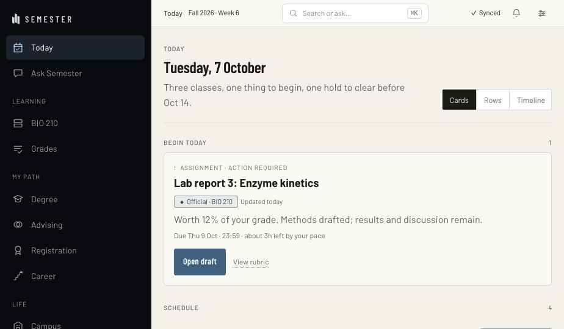
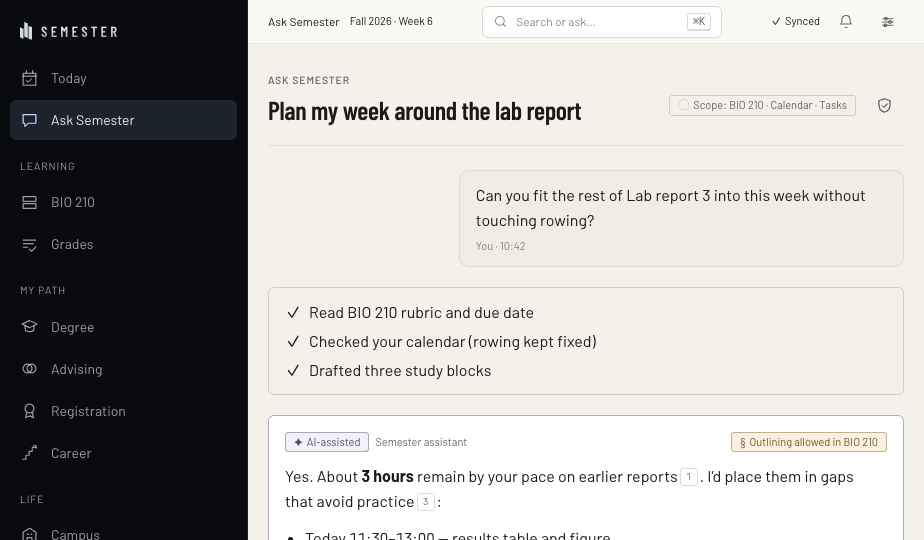
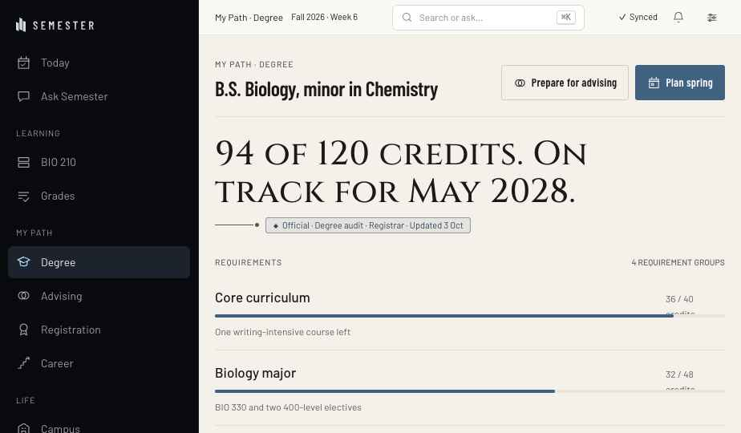
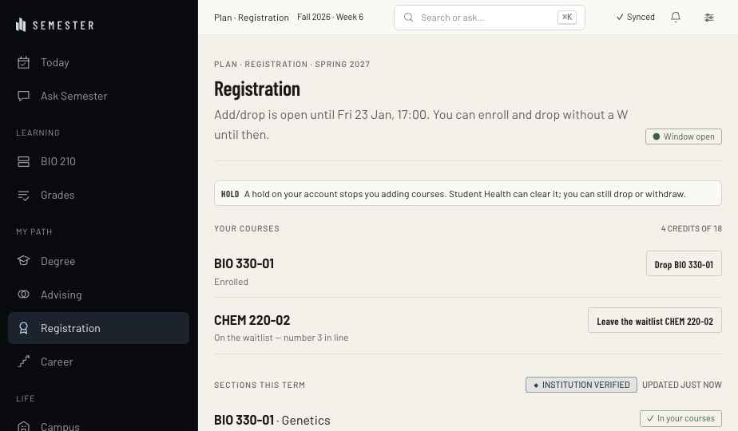
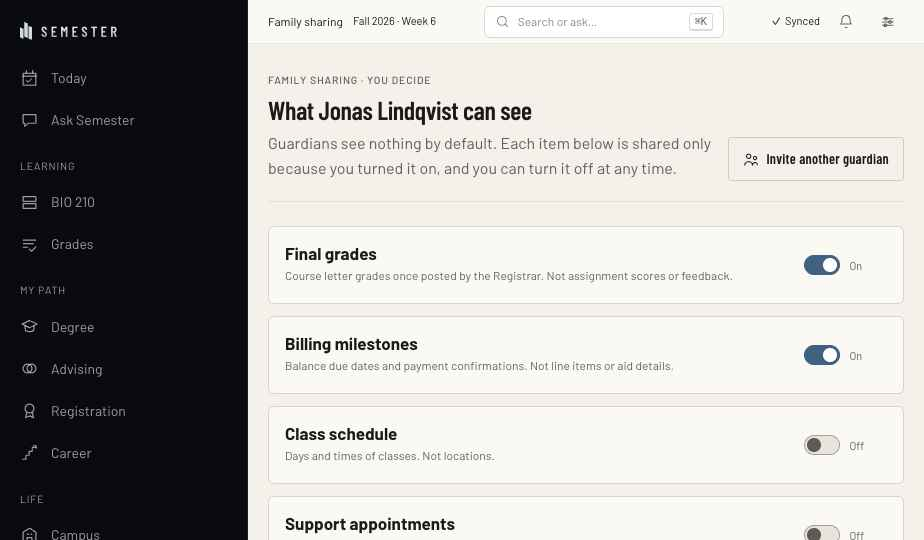
Staff workspaces
One shell, four roles (Faculty, Advisor, Registrar, Finance). A dark scope bar names role, tenant and identity; every record view is logged.
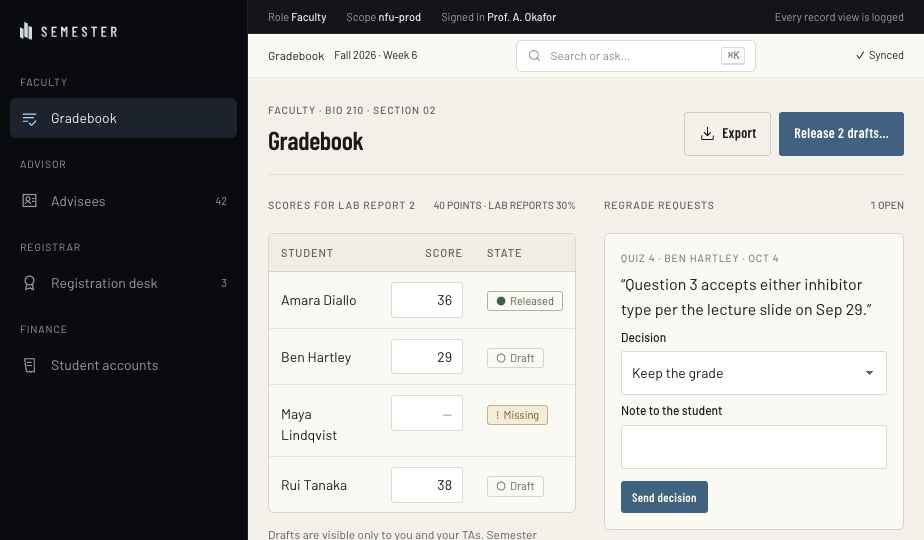
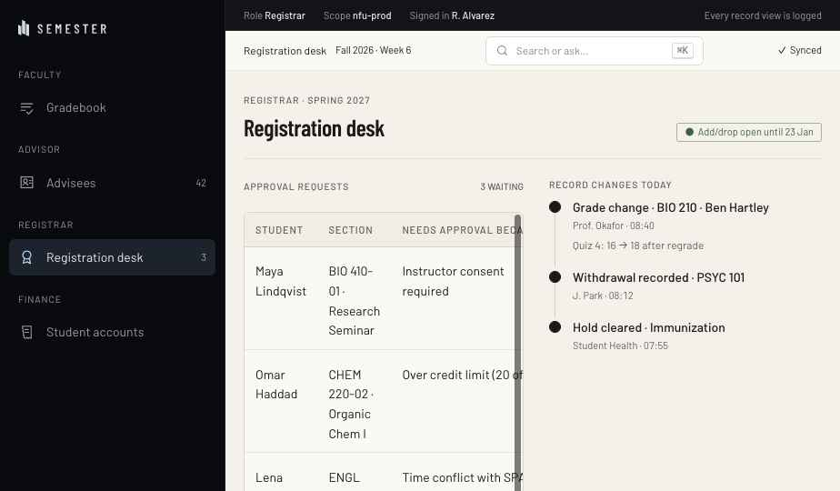
Institution console
Enterprise control plane with an environment bar (Environment, Scope, Operator, MFA, Session). Screens: Overview, Approvals (two-person duty), Integrations, Audit log.
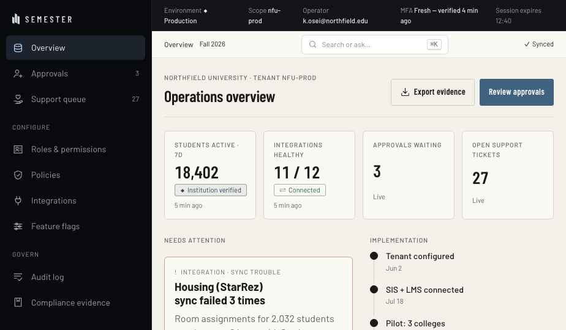
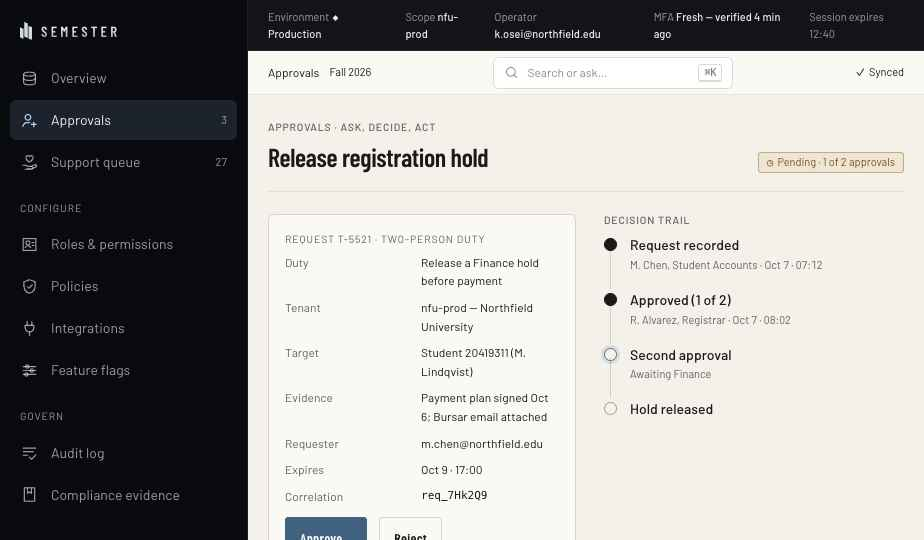
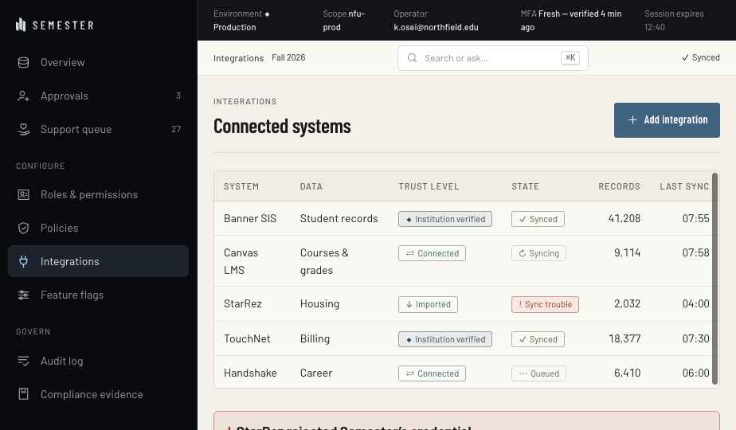
Mobile
Phone-width app with the five canonical destinations on a labelled bottom tab bar: Today, My Path, Search, Plan, Me. Shown on Parchment and Ink grounds.
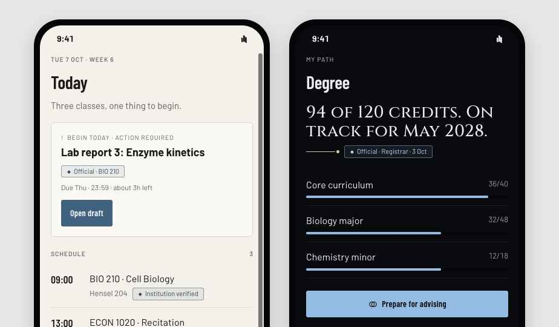
6. Accessibility contract
- WCAG 2.2 AA target: text ≥ 4.5:1 on every surface of a ground; non-text ≥ 3:1; the faint text rung is metadata only.
- One
mainand one visible H1 per screen; skip link to main; keyboard order follows reading order. - 44px ordinary touch targets; 24px floor only inside crowded composites, with keyboard parity.
- State is never colour alone — glyph + word + tone. Forced colours keep borders and origin fills.
- All motion roles zero under
prefers-reduced-motionand the app's Less motion / Low stimulation settings; blur goes opaque under reduced transparency or increased contrast. - Text size (0.94–1.18×), density (1 / .86 / .74), line height, letter spacing and reading width are reader settings the tokens respond to.
- Brand-exempt zones: status, provenance, consent text and accessibility controls are never restyled by tenants, themes or campaigns.
7. Guidelines — deep dives
Provenance and trust
Source: docs/TRUST-CUES-AND-SOURCE-PRESENTATION.md, app/src/lib/where.ts, lib/status.ts, lib/source.ts.
The ladder (strongest first)
| Rank | Key | Word | Sentence |
|---|---|---|---|
| 0 | official | Official / Institution verified | Your institution's own record, read from its system. |
| 1 | connected | Connected | From a calendar or account you connected, checked recently. |
| 2 | made | Made here | The app built this from sources you gave it (rule-based extraction). |
| 3 | personal (yours) | Yours / Student entered | You entered this yourself. Nothing has checked it. |
| 4 | sample | Sample | Shipped as a demonstration. Not your semester. |
| 5 | stale | Out of date | From a connection not checked lately. It may have moved. |
Display-only kinds: AI-assisted, source-linked (a model's draft), Estimated (Semester's arithmetic), Needs review, External.
staleranks belowyourson purpose: an unchecked copy of something that may have moved is worth less than a guess that knows it is a guess.made≠ai. An extraction can misread; a draft can be wrong while sounding right. Different glyphs (○ vs ✦), different sentences.- Estimates and AI are styled to be noticed (amber/violet wash) — the opposite of "official looks louder", because they are what students over-trust.
- Never claim
officialfor anything the institution did not send.
Where cues go
- The eyebrow or state row of an ObjectCard / ContextBar — never louder than the primary action.
- A SectionLabel aside (
<SourceBadge>beside "Released grades"). - The Source & details sheet: Origin · Freshness · Used in · Who can see this · Limitations · Report incorrect information.
- Charts: by pattern (solid / outline / hatched / dotted), plus a source line and "Illustrative demo data" when applicable.
Rules for new work
- Say a state through
SOURCES/STATUSESincomponents/trust/vocabulary.js; never hand-type "Official" or "Synced". - Anything with a source gets a Source & details route.
- Anything a model drafted is
ai, lists its sources and limitations, and is editable before it is kept. - Freshness is written as "Updated 3 days ago", or "Update time not recorded" — never "just now" for an unknown time.
AI governance in the interface
Source: docs/BRAND-PLATFORM.md §6.1, TRUST-CUES-AND-SOURCE-PRESENTATION.md (AI presentation), components/StudyStudio.tsx.
Stance: assistive, source-linked, reviewable, interruptible. A tool, not a person. Name: Ask Semester. No human name, avatar face, sparkle orb or "I" in marketing.
Every AI answer shows (AIResponse)
- The label AI-assisted (violet chip, ✦) — always, wherever it speaks.
- Allowed data scope ("Allowed to read BIO 210 materials, Your calendar"). The student can change scope before asking.
- Numbered sources with their own provenance chips; inline
.ai-citemarkers. - Confidence and what it can't know ("time estimates are mine, not your instructor's").
- Request cost and remaining allowance.
- Policy that applies (course AI policy set by the instructor; institution switches).
- Actions — anything that writes, sends, shares, pays or registers opens Dialog + ActionPreview first.
Show the work
Use StepStatus ("Reading sources → Drafting → Matching quotations → Ready"), marking the step that failed. Never fake an instant, certain answer. No shimmer, no typing animation.
Words
Say: "Ask Semester drafts a plan from the sources you gave it. Review it before you use it." · "It can be wrong. Check the source linked beside each answer."
Never: "AI-powered", "intelligent", "knows you", "accurate", "no hallucinations", "handles it for you", "Ask anything".
Course policy
When an instructor restricts AI (e.g. outlining only), show it on the course workspace (object card "Course AI policy · set by instructor") and as a policy chip on every answer in that course; disable the disallowed actions with a reason rather than hiding them.
Consequential actions
Source: components/unity/ActionPreview.tsx, enrollment/StudentRegistration.tsx, console/Approvals.tsx.
| Kind of action | Pattern |
|---|---|
| Reversible, personal (archive, move, rename) | Do it, then UndoToast ("Task archived. Undo"). No dialog. |
| Leaves Semester or someone else sees it (share, send, submit) | Dialog + ActionPreview: What happens / Exactly what / What stays the same / Taking it back |
| Academic record (enroll, drop, withdraw, regrade) | Two-step Review → Confirm in place; state where the request will land ("number 3 in line"; "a W is recorded") |
| Financial (pay, refund, waive) | Dialog + ActionPreview naming amount, method, processor ("Semester does not process the payment; TouchNet does"), refund route |
| Institutional high-risk (release hold, change role, break-glass) | Two-person duty: request → approve (≠ requester) → act; MFA fresh within 15 min; audit event written first |
Writing the dialog
- Title is a question naming the object: "Drop CHEM 101?"
- Buttons name the outcome: "Keep CHEM 101" / "Drop — confirm". Focus lands on the safe one.
- Destructive uses red ink + red hairline (
variant="danger"), never a solid red fill. - Recovery is required:
undo·request(with how) ·none(with what to do if it was a mistake). - Afterwards: a SuccessState receipt with what changed and "Next:" — never "All set!" while anything is pending.
Consent, sharing and family access
Source: components/unity/Visibility.tsx, AdvisorMeeting.tsx, brief §5 (Family and Guardian Portal).
- Default private. Guardians, advisors and classmates see nothing by default. Never imply default guardian access.
- One decision at a time. Each ask states what, with whom, why, for how long, and how to undo. Decline is equal weight.
- The same question everywhere: VisibilityPicker — Only me · Course · Selected collaborators · Public portfolio. Offer only the audiences the module can honour.
- Show exactly what leaves. Before a share, preview the payload ("will see exactly this, as 'Maya Lindqvist', until 5 Nov 2026"). Private notes are never shared or exported.
- Expiry and revoke. Shares end when the student says; revoke and delete live next to every share.
- Access history. DecisionTrail of who viewed what, when. Students see when a share was opened.
- Protected categories (counseling, health, disability services) are never shareable automatically; show the switch disabled with the reason.
- Guardian register: the consent boundary is the hero of the screen — what's shared, since when, by whose choice.
Institutional surfaces
Source: components/console/, institutional/, brief §4.
- Context first. Every console page opens with Environment (word + shape: ◆ Production), Scope, Operator, Role (grants), MFA freshness, Session, Support access. Staff workspaces carry a scope bar: Role · Scope · Signed in · "Every record view is logged".
- Tables over cards for anything compared across rows (integrations, audit, requests). Caps headers, hairline rows, tabular numerals, mono for IDs and correlation ids.
- Fields (label/value dl) for a single record.
- DecisionTrail for anything with authority: who, when, under which grant.
- Errors separate cause classes: retryable failure vs permission vs configuration. Name the system and the consequence for students ("Students see a stale label on Housing").
- Implementation honesty. Use "Planned", "Pilot", "Preview" chips beside the capability — never a roadmap presented as live.
- Authority scope is always visible for faculty and advisors (Can see / Can approve / Cannot). No copy suggests the tool judges staff or ranks students.
Accessibility contract
Target WCAG 2.2 AA (a design requirement, not a conformance claim).
Contrast — measured against every surface of a ground, not the flattering one
| Element | Requirement |
|---|---|
| Body / UI text | ≥ 4.5:1 |
| Large text (≥24px or ≥18.66px bold) | ≥ 3:1 |
| Icons, borders, focus, chart marks | ≥ 3:1 vs neighbour |
| Tertiary ("faint") ink | metadata only, never information a student must act on |
| Brass | base stop on dark only; shade stop (#695a33) for text on light |
Structure & input
- One
main, one visible H1, skip link; heading levels describe structure. - Keyboard order follows reading order; focus never lands under sticky chrome (scroll margins 96 / 84px).
- 44px ordinary targets; 24px floor only in crowded composites with keyboard parity. Icon-only controls always named.
- Native inputs; persistent labels; hints and errors associated via aria-describedby; errors preserve input.
- Overlays: focus trap, Escape, outside dismissal, focus return; triggers report aria-expanded.
Never colour alone
Every state: glyph + word + tone. Provenance origin has a second carrier in fill (solid / outline / dashed); forced colours thicken the solid chip's border to 3px.
Reader settings the tokens respond to
Text size 0.94–1.18× (--text-scale) · Density 1 / .86 / .74 · Line height 1.35–1.95 · Letter/word spacing · Reading width 52–82ch · Body face incl. Atkinson Hyperlegible · Motion: Follow device / Less motion / Low stimulation (also removes gradients, shadows, quieter badges) · Increase contrast raises faint/dim/hairline alphas · 13 grounds + Match my device.
Motion
All roles zero under reduced motion and data-calm. No essential meaning depends on motion. No flashing, no parallax, no looping decoration, no countdown theatre.
Brand-exempt zones
Status/warnings, provenance, consent text and accessibility controls: body-grade type only (never Cinzel), never restyled by tenants, campaigns or themes, never animated away or hidden behind hover.
Layout and responsive behaviour
| Tier | Width | Navigation | Page pad |
|---|---|---|---|
| Compact | < 760px | Labelled bottom TabBar: Today · My Path · Search · Plan · Me | 18px |
| Medium | 760–1099px | Compact rail (72px, icons + tooltip names) | 20px |
| Wide | ≥ 1100px | SideRail 248px (272 at very wide) with group labels | 30px |
- Shell: SideRail (Ink) │ SystemContextBar (44px: location · term · ⌘K · sync · tools) over a scrolling page.
- Page: pagehead (kicker · H1 · one-line purpose · ≤2 actions) →
colsgridminmax(0,1.6fr) minmax(300px,1fr)→ main column leads with the next action; aside holds "Needs you", context, policy. Stacks to one column under 1000px. - Measures: reading 66ch; operational content ≤ 1180px.
- Tables keep row identity and the first action on compact screens; the table region scrolls, not the document.
- Five canonical destinations are the spine: Today, My Path, Search, Plan, Me. Specialist tools open in context (OpenIn), never as a sixth global product.
- Workspace modes (presentation only): Guided · Focused (navigation steps back, FocusBar is the way out) · Detailed (source sentences up front) · Accessibility.
Content templates
From docs/BRAND-PLATFORM.md §7.
Status sentence — what is true → what it means for you → what you can do.
"Your Canvas calendar hasn't updated since Tuesday. Deadlines below may have moved. Reconnect it, or check the course page."
Empty state — why it's empty + one action. "No grades released yet. Your instructor has not released any BIO 210 grades for Fall 2026. Grades appear here once they do." [Work out what you need]
Error — what failed, what's safe, the way out, a reference. "Canvas didn't answer. Your draft is safe on this device." [Try again] [Use Canvas directly] Reference: SYNC-4F2A
Success — acknowledge, then Next. "Registration submitted. Next: review your spring week."
Permission change — what changed, why, who controls it, where to change it.
Incident — Status · What is affected · What is NOT affected (only if verified) · What it means for you · What you can do now · What we know / don't know · Next update (only if operations can keep it). Never "minor", "isolated", "out of an abundance of caution".
Onboarding — "Semester starts with what you have. Pick one: add a syllabus, connect a calendar, or use sample data." → first real next step with its source label → consent one at a time → no streaks, no points, Skip always available.
Dates — "Thu 9 Oct · 23:59" in UI; "3 Oct 2026" in documents. Always unambiguous; time zone when it crosses one.
Patterns (cards in the Design System tab)
- AI answer anatomy — label, scope, sources, confidence, cost, policy, human-confirmed action.
- Consequential action — review → preview → confirm → receipt; reversible work uses Undo.
- Consent & sharing — one decision at a time, default private, visible access history.
- State matrix — loading, empty, partial/stale, offline, error, permission, success for every data region.
- Provenance ladder — official › connected › made here › yours › sample › out of date.
- Source Line — the signature device linking a statement to its source chip.
Templates
templates/student-screen— rail + context bar + page head + main/aside.templates/console-screen— environment bar + rail + table + decision trail.